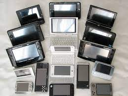

Mobile computing devices are known as “Mobile Computer Devices” because they allow users to make connection to internet with all parts of your mobile devices. These devices are designed to be portable that means they are comfortable on your lap, pocket or palm of your hand. So users can carry those devices from one location to other location without any headache.
Smartphone connect a mobile phone and a computer in one hand to the same device. Smartphone allows users to access and store information (such as e-mails) and installs the program (apps) while being able to use a mobile phone in one device.
Smartphone connect a mobile phone and a computer in one hand to the same device. Smartphone allows users to access and store information (such as e-mails) and installs the program (apps) while being able to use a mobile phone in one device.
I Pad tablet is a tablet PC designed by Apple Inc. The iPad has a 9.7 inch touch screen that users can talk directly through the finger stroke. This portable device can be used to browse the web, listen to music, watch movies, read eBooks and play games in addition to other things.
The name of PDA is Pocket computer; this device is capable to transmit data from one terminal to other terminal with synchronization. In the PDA have all functionality such as making call voice/video, calendar, and more. Today, PDAs are available in different types of operating system like as Apple iOS, Windows Mobile, Blackberry, and Google’s Android.
Portable computing has to need wired communication. All users have freedom to move these devices themselves anywhere and anytime but it requires to access them to make connection them with a network line, so it is known as “Portable Computing“.
It is also called of “Mobile Computing“, so it is refers to wireless communication system. Mobile computing produces better environment that users can send any type of data from one location to other location anywhere and anytime with using of mobile computing devices without getting any physical connections.